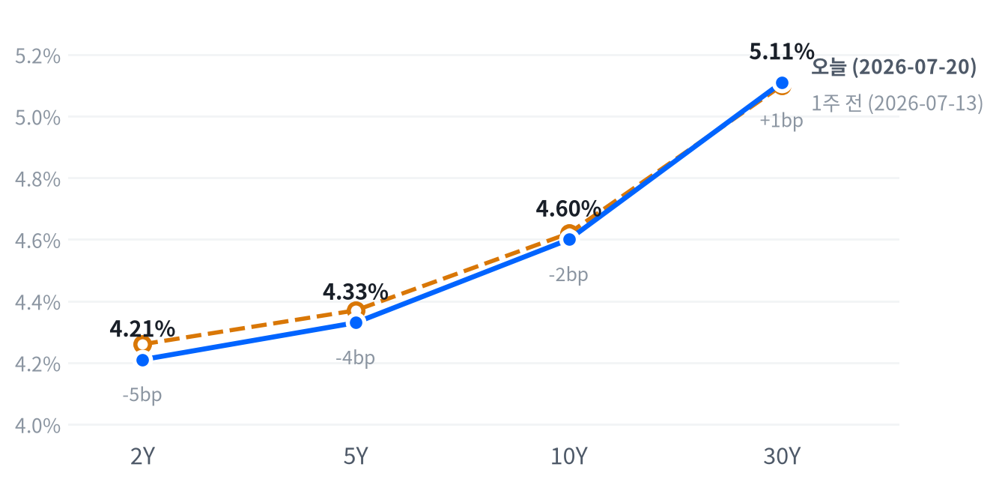

동인: 이번 세션을 움직인 축은 메모리주 폭등이다. 마이크론(+12.17%)·웨스턴디지털(+12.51%)·씨게이트(+11.14%) 등 미국 메모리 3사가 나란히 두 자릿수로 급등하며 기술 섹터(+2.89%) 전체를 끌어올렸고, AMD의 마이크로소프트향 AI 계약 소식과 3M·GM 등 우량주 실적 호조, S&P500 기업 87%의 2분기 컨센서스 상회 소식이 3거래일 연속 하락 이후의 반등을 뒷받침했다.
크로스에셋 정합성: 주식·원자재·통화 흐름은 대체로 리스크온과 맞물린다. 나스닥(+1.29%)·러셀2000(+1.53%) 강세와 함께 국채금리도 Yahoo 장중 참고치 기준 소폭(2~4bp) 반등해 안전자산 수요 이완을 뒷받침했고, 유가(WTI +1.71%, Brent +2.62%)는 중동 공급 리스크를 반영하며 별도로 강세를 보였다. 다만 금(+1.82%)이 위험자산 랠리 속에서도 함께 오른 점과 삼성전자(+6.15%)·SK하이닉스(+4.08%)의 미국 메모리주 동조 랠리가 원화 강세(-0.49%)로 이어진 점은 통상적인 리스크온 조합과는 결이 다르며, 지역별 반도체 수급과 안전자산 수요가 동시에 작동한 결과로 보인다.
다음 촉매: 단기적으로는 이번 주 이어질 반도체·AI 인프라 기업들의 2분기 실적에서 메모리·AI 인프라향 수요 가이던스가 이번 랠리를 뒷받침할 만큼 견조하게 유지되는지가 핵심이며, 7/29 FOMC를 앞두고 동결 확률(83.4%)이 추가로 흔들리는지도 채권·달러 방향을 좌우할 변수다. 중동 지정학 리스크가 유가·안전자산 수요에 계속 배경으로 작용할지도 다음 세션들의 변동성을 가늠할 요인이다.
| 지수 | 종가 | 변동 | 등락률 |
|---|---|---|---|
| Russell 2000 | 2,987.40 | +44.97 | +1.53% |
| Nasdaq | 25,837.21 | +329.14 | +1.29% |
| S&P 500 Growth | 136.34 | +1.65 | +1.23% |
| S&P 500 | 7,509.20 | +65.92 | +0.89% |
| Dow | 52,224.64 | +385.38 | +0.74% |
| S&P 500 Value | 230.56 | +0.83 | +0.36% |
| 섹터 | 종가 | 변동 | 등락률 |
|---|---|---|---|
| Technology | 180.78 | +5.07 | +2.89% |
| Energy | 58.50 | +0.56 | +0.97% |
| Health Care | 160.25 | +1.00 | +0.63% |
| Industrials | 178.66 | +0.54 | +0.30% |
| Consumer Discretionary | 114.87 | +0.26 | +0.23% |
| Materials | 50.10 | +0.07 | +0.14% |
| Financials | 56.11 | +0.07 | +0.12% |
| Utilities | 44.92 | -0.02 | -0.04% |
| Real Estate | 45.20 | -0.03 | -0.07% |
| Communication Services | 110.03 | -0.77 | -0.69% |
| Consumer Staples | 84.06 | -0.80 | -0.94% |
나스닥과 S&P500은 개장 30분봉(09:30 ET) 구간에서 나란히 시가 대비 저점(나스닥 -0.38%, S&P500 -0.29%)을 찍은 뒤 반등에 나서 각각 13:30·12:30에 장중 고점(+0.42%, +0.34%)을 형성했다. 이후 오후 들어 상승폭을 일부 반납하며 나스닥 +1.29%, S&P500 +0.89%로 마감해 고점 대비로는 다소 밀린 채 장을 마쳤다.
러셀2000은 개장가 자체가 이날 세션 저점이었고 이후 마감 직전인 15:30까지 거의 쉬지 않고 오름폭을 키워 시가 대비 +1.32% 고점을 형성했다. 소형주가 대형·성장주보다 종가로 갈수록 강도를 더한 랠리를 보이며 최종 +1.53%로 지수 6종 중 가장 큰 상승률을 기록했다.
엔비디아는 개장 직후인 09:30에 시가 대비 +0.53% 고점을 먼저 찍은 뒤 10시경 -1.70%까지 밀리는 조정을 거쳤고, 이후 낙폭을 되돌리며 전일 대비 +1.97%(207.29달러)로 마감했다 — 지수보다 진폭이 컸던 하루였다.
이날 반등의 핵심은 메모리주 폭등이다. 마이크론이 12% 넘게 뛰고 웨스턴디지털·씨게이트도 두 자릿수로 오르며 기술 섹터 전체(+2.89%)를 밀어올렸고, AMD가 마이크로소프트와의 AI 계약 소식에 8% 상승했다는 보도도 가세했다. 3M·GM 등 우량주 실적 호조와 S&P500 기업 87%의 2분기 컨센서스 상회 소식이 3거래일 연속 하락 이후의 반등에 힘을 보탰고, 중동 지정학 리스크는 배경으로 남아 있었으나 이날 랠리를 꺾지는 못했다.
이번 반등은 특정 스타일에 국한되지 않았다. Growth(+1.23%)와 Value(+0.36%)가 함께 올랐고 다우(+0.74%)·러셀2000(+1.53%) 같은 경기민감·소형주도 나스닥(+1.29%) 못지않게 강세를 보여, 3거래일 하락으로 눌렸던 밸류에이션 부담이 실적 서프라이즈를 계기로 되돌려진 폭넓은 매수세로 읽힌다.
섹터 로테이션 측면에서는 기술(+2.89%)이 압도적 1위를 차지했지만 헬스케어(+0.63%)·산업재(+0.30%)도 플러스권에 안착했고, 반대로 커뮤니케이션서비스(-0.69%)·필수소비재(-0.94%)만 뒷걸음질했다. 낙폭이 큰 섹터가 대부분 방어적 성격이라는 점은 이번 반등이 리스크온 성격의 매수였음을 뒷받침한다.
포지셔닝 관점에서는 메모리·반도체 랠리가 개별 종목 실적에 근거한 만큼 추격매수보다 이번 주 이어질 실적 발표를 확인하며 대응하는 편이 안전하고, 러셀2000이 종가까지 상승폭을 키운 점은 소형주 로테이션이 다음 세션에도 이어지는지 재확인이 필요한 신호다.
| 만기 | 수익률(07-20, FRED 확정) | 전거래일대비 | 1주 전(07-13) | 주간 변화 | 07-21 장중 참고치(Yahoo) |
|---|---|---|---|---|---|
| 2Y | 4.21% | +3bp | 4.26% | -5bp | 데이터 없음 |
| 5Y | 4.33% | +5bp | 4.37% | -4bp | 4.37% (+4bp) |
| 10Y | 4.60% | +5bp | 4.62% | -2bp | 4.63% (+3bp) |
| 30Y | 5.11% | +5bp | 5.10% | +1bp | 5.13% (+2bp) |

2s10s 스프레드는 07-20 FRED 확정 기준 +39bp로, 1주 전(07-13, 2Y 4.26%·10Y 4.62% 기준 +36bp) 대비 +3bp 확대됐다. 주간 기준으로 2Y(-5bp)·5Y(-4bp)·10Y(-2bp)가 하락한 반면 30Y(+1bp)는 소폭 올라, 단기물 중심의 강세 속에 커브가 완만히 스티프닝됐다.
주간 기준 커브 변화는 2Y(-5bp)·5Y(-4bp)·10Y(-2bp)가 나란히 하락한 반면 30Y만 소폭(+1bp) 오른 완만한 불 스티프닝이다. 6월 CPI·Core CPI·PPI가 연속으로 컨센서스를 하회하며 확인된 디스인플레이션 흐름이 단기물 금리에 먼저 반영됐고, 7/29 FOMC에서 동결이 유력(CME FedWatch 83.4%)한 가운데도 단기물이 장기물보다 더 크게 강세를 보인 점은 그 다음 인하 사이클에 대한 기대가 여전히 살아 있음을 보여준다.
07-21 장중 Yahoo 참고치에서는 5Y·10Y·30Y가 FRED 07-20 확정치보다 2~4bp씩 높게 나타났다. 이날 메모리주 폭등이 이끈 위험자산 랠리(나스닥 +1.29%, 러셀2000 +1.53%)와 맞물려 안전자산 수요가 옅어지며 국채금리에 약한 베어 압력이 실렸을 가능성이 있으나, 상승폭이 2~4bp에 그쳐 지난주의 불 스티프닝 흐름을 되돌릴 정도는 아니다.
듀레이션 전략 측면에서는 단기물 강세가 이미 디스인플레이션 서프라이즈를 상당 부분 반영한 만큼 여기서 추가로 듀레이션을 확대하기보다는 7/29 FOMC 결과를 확인한 뒤 대응하는 편이 낫다. 2s10s 스프레드가 39bp까지 벌어진 구간에서는 커브 스티프너 포지션의 리스크·리워드가 이미 상당폭 소진된 만큼, 신규 진입보다는 기존 포지션 관리에 무게를 두는 게 합리적이다.
| 페어 | 종가 | 변동 | 등락률 |
|---|---|---|---|
| DXY | 101.19 | +0.20 | +0.20% |
| USD/KRW | 1,480.17 | -7.22 | -0.49% |
| USD/JPY | 163.18 | +0.67 | +0.41% |
| EUR/USD | 1.1403 | -0.0025 | -0.22% |
장중 흐름(USD/JPY): 엔/달러는 이날 새벽 02:00 ET에 시가 대비 -0.04%로 저점을 찍은 뒤 완만한 엔 약세로 방향을 잡아 뉴욕장 마감 이후인 21:00 ET에 +0.46%로 세션 고점을 형성했고, 전일 대비 +0.41%(163.18엔) 오르며 고점 부근에서 하루를 마쳤다.
DXY는 +0.20% 상승했는데, 국채금리가 07-21 장중(Yahoo 참고치) 소폭 반등한 흐름과 궤를 같이한다. 유로/달러는 -0.22% 내리며 달러 강세에 순응했다.
반면 원화는 -0.49%로 오히려 달러 대비 강세를 보여 DXY와 반대 방향으로 움직였다. 이날 삼성전자(+6.15%)·SK하이닉스(+4.08%)가 미국 메모리주 랠리에 동조하며 강하게 반등한 점을 감안하면, 외국인 자금이 국내 반도체주로 유입되며 원화 강세 압력을 만들었을 개연성이 있다.
| 품목 | 종가 | 변동 | 등락률 |
|---|---|---|---|
| WTI | 84.65 | +1.42 | +1.71% |
| Brent | 91.56 | +2.34 | +2.62% |
| Natural Gas | 2.88 | +0.03 | +0.87% |
| Gold | 4,083.20 | +72.90 | +1.82% |
장중 흐름(WTI): WTI는 이른 새벽 04:00 ET에 시가 대비 -0.95%까지 저점을 찍은 뒤 반등해 10:30 ET에 +3.48% 고점을 형성했고, 이후 오후 들어 상승폭을 다소 반납하며 전일 대비 +1.71%(84.65달러)로 마감했다.
장중 흐름(Gold): 금은 자정(00:00 ET) 무렵 시가 대비 -0.08% 소폭 저점을 찍은 뒤 꾸준히 올라 오후 14:00 ET에 +1.01% 고점을 형성했고, 전일 대비 +1.82%(4,083.20달러)로 마감하며 4,000달러 선 위에서 다음 주 FOMC를 앞두고 반등했다.
이날 최대 변동폭은 브렌트유(+2.62%)로 WTI(+1.71%)보다 컸다. 미국-이란 긴장, 후티 반군의 홍해 위협, 호르무즈 해협 안전 이슈 등 중동발 공급 리스크가 국제 벤치마크인 브렌트에 더 크게 반영됐고, 천연가스(+0.87%)는 상대적으로 잠잠했다. 금은 미국-이란 외교 긴장 완화 기대가 유가발 인플레이션 리스크를 낮추면서도, 위험자산 랠리 속에서 안전자산 수요가 견조하게 유지된 하루였다.
| 자산군 | 판단 | 근거 |
|---|---|---|
| 주식(대형/성장) | 비중 유지·선별 확대 | 나스닥(+1.29%)·S&P500 Growth(+1.23%)가 Value(+0.36%) 상회, 메모리·반도체 실적 모멘텀 견조 |
| 주식(경기민감/소형) | 단기 트레이딩 관점 비중 확대 | 러셀2000(+1.53%)이 종가까지 상승폭 확대, 다만 하루짜리 로테이션인지 확인 필요 |
| 채권(듀레이션) | 중립·관망 | 주간 기준 완만한 불 스티프닝이나 07-21 장중 전 구간 소폭 금리 반등(+2~4bp)으로 베어 요소 재부각 |
| FX(달러) | 중립, 원화 동조 랠리 주시 | DXY +0.20% 강세에도 원화는 반대로 강세, 미국 메모리 랠리의 한국 반도체주 전이 지속 여부가 관건 |
| 원자재(유가) | 지정학 프리미엄 유지, 추격매수 자제 | 브렌트(+2.62%)가 WTI(+1.71%)보다 강세, 중동 공급 리스크가 계속 반영 |
| 메모리/DRAM | 실적 모멘텀 기반 비중 확대 | 마이크론·웨스턴디지털·씨게이트 동반 두 자릿수 급등, BofA·Citi 목표가 상향이 뒷받침 |
| AI 인프라 | 광네트워킹 중심 선별 비중 확대 | 코히런트(+11.15%)·루멘텀(+9.41%)이 최대 상승, 전력인프라(GE 버노바)는 보합 |
웨스턴디지털 +12.51% / 마이크론 +12.17%: 메모리 6종 중 최대 상승폭이다. Bank of America가 마이크론 목표가를 1,550달러로 상향했고 Citi도 2026~2027년 DRAM 가격의 큰 폭 상승을 전망하는 등 AI발 DRAM·HBM 수요 강세가 밸류에이션 재평가를 이끌고 있다.
코히런트 +11.15% / 루멘텀 +9.41%: AI 인프라 그룹 내 최대 상승폭으로, AI 데이터센터 병목이 연산력에서 광통신·네트워킹 인프라로 옮겨가는 재평가 흐름의 연장선이다.
러셀2000 +1.53%: 지수 6종 가운데 가장 큰 상승률을 기록했다. 장 초반부터 종가까지 상승폭을 꾸준히 키운 점에서 소형주 로테이션이 하루짜리 반등에 그치는지 다음 세션 확인이 필요하다.
| 종목 | 종가 | 변동 | 등락률 |
|---|---|---|---|
| Western Digital | 548.39 | +60.97 | +12.51% |
| Micron | 970.82 | +105.36 | +12.17% |
| Seagate | 891.83 | +89.38 | +11.14% |
| Samsung Elec | 259,000 | +15,000 | +6.15% |
| SK hynix | 1,836,000 | +72,000 | +4.08% |
| Nvidia | 207.29 | +4.01 | +1.97% |
메모리 랠리는 하루짜리가 아니라 7월 중순 이후 지속되고 있다. 7/9일 셀오프 반전 이후 웨스턴디지털·씨게이트가 +7%, 마이크론·샌디스크가 +6~7%대 급등했고, 이날도 마이크론(+12.17%)·웨스턴디지털(+12.51%)·씨게이트(+11.14%)가 재차 두 자릿수로 뛰었다.
촉매는 실적과 밸류에이션 재평가다. Bank of America(Vivek Arya)는 마이크론 목표가를 1,550달러로 상향했고 Citi의 Catalyst Watch는 2026~2027년 DRAM 가격의 큰 폭 상승을 시사했다는 보도가 있다. 마이크론이 6/21일 발표한 FY2026 3분기 EPS는 컨센서스 대비 24% 서프라이즈를 기록했고, 씨게이트도 동분기 EPS 17% 서프라이즈에 잉여현금흐름 9.53억달러를 기록하는 등 펀더멘털 개선이 밸류에이션 재평가를 뒷받침하고 있다.
삼성전자(+6.15%)·SK하이닉스(+4.08%)도 동반 상승했다. 직접적인 보도는 확인되지 않지만 미국 메모리주 랠리와 시점이 일치해 한국 반도체주의 동조화 흐름으로 볼 수 있다.
미국 메모리주는 DRAM·HBM 가격 상승 사이클과 실적 모멘텀이라는 펀더멘털에 근거해 두 자릿수 급등을 반복하고 있어, 목표가 추가 상향이 이어지는 한 눌림목 매수 관점을 유지할 만하다. 다만 마이크론·웨스턴디지털 모두 이미 12% 안팎 급등한 뒤라 단기 과열 부담도 함께 커진 만큼, 신규 진입은 분할 매수로 대응하는 편이 리스크 관리 측면에서 합리적이다.
| 종목 | 분야 | 종가 | 변동 | 등락률 |
|---|---|---|---|---|
| Coherent | 광통신/포토닉스 | 317.22 | +31.82 | +11.15% |
| Lumentum | 광통신/포토닉스 | 837.56 | +72.01 | +9.41% |
| Marvell | 반도체/ASIC | 207.96 | +13.02 | +6.68% |
| Vertiv | 데이터센터 인프라(열관리·전력) | 304.50 | +12.83 | +4.40% |
| GE Vernova | 발전/전력 인프라 | 1,078.81 | -0.37 | -0.03% |
광네트워킹/포토닉스 그룹(코히런트 +11.15%, 루멘텀 +9.41%)이 이날 AI 인프라 그룹 내 최대 상승폭을 기록했다. 마벨(+6.68%)도 랙스케일(rack-scale) 하드웨어 관련 소식에 투자자들이 AI 인프라주로 재진입했다는 보도가 있었고, 코히런트·루멘텀 등도 4% 이상의 동반 상승(sympathy move)을 보였다고 Benzinga가 전했다.
이 흐름은 2026년 상반기 내내 이어진 테마의 연장이다. AI 데이터센터 병목이 연산력에서 광통신/네트워킹 인프라로 옮겨가는 재평가가 진행 중이며, 엔비디아 젠슨 황이 Computex 2026 기조연설에서 언급한 광연결(optical connectivity) 수요 증가가 코히런트·루멘텀의 초기 랠리(6월 각각 +17%, +13%)를 촉발했다는 분석도 있다.
전력/데이터센터 인프라 그룹은 온도차를 보였다. 버티브(+4.40%)는 상승한 반면 GE 버노바(-0.03%)는 거의 보합에 머물러, 광통신/반도체 부품주가 전력·발전 인프라주 대비 확연히 강했던 하루였다.
광네트워킹 그룹은 반도체 밸류에이션 재평가 국면 속에서도 개별 수요 서사가 견조하다는 신호로 읽히며, 최근 급등한 코히런트·루멘텀·마벨은 추격매수보다 눌림목을 확인한 뒤 대응하는 편이 합리적이다. 전력/시설 그룹(GE 버노바·버티브)은 데이터센터 전력 수요라는 장기 테마는 유효하나 이날처럼 광통신 그룹 대비 상대적으로 부진할 수 있어, 포트폴리오 내 비중은 광네트워킹 쪽에 무게를 두는 전략이 타당하다.
| 지표 | Actual | Forecast | Previous | 발표일 | 판정 |
|---|---|---|---|---|---|
| Initial Jobless Claims (주간, 7/11 종료) | 208,000 | 217,000 | 216,000 | 2026-07-17 | 하회▼ |
| Initial Claims 4주 평균 | 214,250 | — | 219,000 | 2026-07-17 | — |
| Continuing Jobless Claims (7/4 종료) | 1,805,000 | — | 1,821,000 | 2026-07-17 | — |
| Nonfarm Payrolls 증감 (6월) | +57K | — | +129K | 2026-06월 기준 | — |
| 실업률 (6월) | 4.2% | — | 4.3% | 2026-06월 기준 | — |
| 평균시급 MoM (6월) | 0.35% | — | 0.27% | 2026-06월 기준 | — |
| JOLTS 구인건수 (5월) | 7,594K | — | 7,585K | 2026-05월 기준 | — |
| 지표 | Actual | Forecast | Previous | 발표일 | 판정 |
|---|---|---|---|---|---|
| Philadelphia Fed 제조업지수 (7월) | 41.4 | 12.7 | 10.3 | 2026-07-16 | 상회▲ |
| Industrial Production MoM (6월) | 0.08% | 0.2% | 0.14% | 2026-07-17 | 하회▼ |
| Durable Goods Orders MoM (5월) | -4.47% | — | 8.51% | 2026-05월 기준 | — |
| New Home Sales (5월) | 580K | — | 626K | 2026-05월 기준 | — |
| Existing Home Sales (6월) | 4,090K | — | 4,190K | 2026-06월 기준 | — |
| 실질GDP 성장률 QoQ 연율 (1분기) | 2.1% | — | 0.5% | 2026년 1분기 기준 | — |
| 지표 | Actual | Forecast | Previous | 발표일 | 판정 |
|---|---|---|---|---|---|
| Retail Sales MoM (6월) | 0.22% | 0.3% | 1.02% | 2026-07-16 | 하회▼ |
| Michigan 소비자심리지수 (5월) | 44.8 | — | 49.8 | 2026-05월 기준 | — |
| 지표 | Actual | Forecast | Previous | 발표일 | 판정 |
|---|---|---|---|---|---|
| CPI YoY (6월) | 3.73% | ~3.8% | 4.27% | 2026-07-14 | 하회▼ |
| CPI MoM (6월) | -0.42% | -0.1% | 0.47% | 2026-07-14 | 하회▼ |
| Core CPI YoY (6월) | 2.81% | ~2.9% | 2.96% | 2026-07-14 | 하회▼ |
| Core CPI MoM (6월) | -0.02% | 0.2% | 0.21% | 2026-07-14 | 하회▼ |
| PPI 최종수요 MoM (6월) | -0.28% | 0.0% | 0.62% | 2026-07-15 | 하회▼ |
| PCE 물가지수 YoY (5월) | 4.07% | — | 3.80% | 2026-05월 기준 | — |
| Core PCE YoY (5월) | 3.41% | — | 3.32% | 2026-05월 기준 | — |
| Michigan 1년 기대인플레이션 (5월) | 4.8% | — | 4.7% | 2026-05월 기준 | — |
6월 CPI·Core CPI·PPI가 나란히 컨센서스를 하회하며 디스인플레이션을 재확인했음에도, 국채금리는 07-21 장중(Yahoo 참고치) 5Y·10Y·30Y가 FRED 전거래일 대비 2~4bp씩 반등해 지난주 하락분 일부를 되돌렸다. 위험자산 랠리(나스닥 +1.29%, 러셀2000 +1.53%) 속에서 안전자산 수요가 옅어진 결과로 보이며, 인플레이션 지표 자체가 매파적으로 돌아선 신호는 아니다.
CME FedWatch 기준(2026-07-21 시점) 7/29 FOMC 동결 확률은 83.4%로, 7월 초 81%에서 한때 90%까지 올랐다가 최근 소폭 되돌려진 수준이다. 디스인플레이션 지표들은 이르면 9월 인하 기대를 지지하지만, 정작 다음 회의(7/29)에서는 동결이 여전히 압도적 컨센서스로 남아 있어 시장은 '즉각적 인하'보다 '조건부 인하 준비' 쪽에 무게를 두고 있다.
신규 실업수당 청구건수가 컨센서스(217K)를 크게 하회한 208K로 나오며 노동시장의 견조함을 재확인시켰고, 필라델피아 연은 제조업지수도 컨센서스(12.7)를 큰 폭 상회한 41.4를 기록해 기업심리가 뚜렷하게 개선됐다. 반면 6월 비농업고용(+57K)은 직전월(+129K)에 크게 못 미쳐 고용 서프라이즈들이 서로 엇갈리는 모습이다.
심리(선행): 필라델피아 연은 제조업지수는 컨센서스(12.7)를 크게 웃돈 41.4로 뚜렷한 개선을 보인 반면, 미시간 소비자심리지수(5월 44.8, 전월 49.8)는 오히려 악화돼 기업심리와 소비자심리가 서로 다른 방향을 가리킨다.
활동(중행): 산업생산 MoM(6월 0.08%)이 컨센서스(0.2%)를 하회하고 내구재수주(5월 -4.47%)·신규주택판매(5월 58만건)·기존주택판매(6월 409만건)도 전월 대비 감소해 활동 지표는 대체로 둔화 신호가 우세하다. 다만 시차가 큰 1분기 실질GDP(2.1%)는 직전 분기(0.5%)보다 개선돼 활동 축 안에서도 지표별 온도차가 크다.
성적표(후행): 고용에서는 6월 비농업고용(+57K)이 직전월(+129K)을 크게 밑돌았지만 실업률은 4.2%로 오히려 낮아졌고 신규 실업수당 청구건수(208K)도 컨센서스(217K)를 하회해 방향이 엇갈렸다. 인플레이션은 CPI·Core CPI·PPI가 나란히 컨센서스를 하회해 후행 지표 가운데 가장 뚜렷한 디스인플레이션 흐름을 보였다.
축 간에는 선행(필라델피아 연은 서프라이즈)과 중행(산업생산·내구재수주 둔화)이 상충하는 구도가 이어지고 있으며, 선행지표의 개선이 아직 활동·고용 지표로 옮겨붙지 않은 전형적인 지표 시차 국면으로 볼 수 있다.
기본 시나리오(확률 우위): 향후 1~3개월은 디스인플레이션 기조가 이어지되 유가발 노이즈로 월별 변동성이 커지는 완만한 둔화 국면이 이어질 공산이 크다. 6월 CPI·PPI·Core CPI의 연속 하회와 신규 실업수당 청구건수의 견조함이 이 시나리오를 뒷받침한다.
대안 시나리오: 다만 중동 지정학 리스크가 호르무즈 해협 통항에 실질적 차질을 빚을 정도로 확산돼 유가가 추가 급등할 경우, 3분기 CPI가 재반등하며 9월 이후 인하 기대가 후퇴하는 쪽으로 무게가 옮겨갈 수 있다. 이 시나리오를 가를 핵심 일정은 8월 초 발표될 7월 고용지표와 8월 중순 7월 CPI, 그리고 7/29 FOMC다.
자산배분 관점에서는 기본 시나리오 하에서 메모리·반도체 등 실적 모멘텀이 확인된 성장주와 단기 듀레이션 비중이 유효하지만, 유가 90달러 상회가 굳어지거나 국채금리가 추가로 오르는 조짐이 뚜렷해지면 방어주·짧은 듀레이션 중심으로 신속히 전환하는 트리거 기반 대응이 바람직하다.
본 리포트의 시장 수치는 market_data.json·intraday.json, 경제지표 Actual/Previous는 econ_indicators.json(FRED 확정치)에서 발췌했으며, Forecast·뉴스·FedWatch 수치는 research_notes.md에 기재된 공개 보도(Motley Fool, TheStreet, 24/7 Wall St., Investing.com, Benzinga, PhotonCap, CNBC, IG, ETF Trends, Trading Economics, investinglive, Yahoo Finance, TradingKey, FX Leaders, Sunday Guardian Live 등)를 출처로 한다.